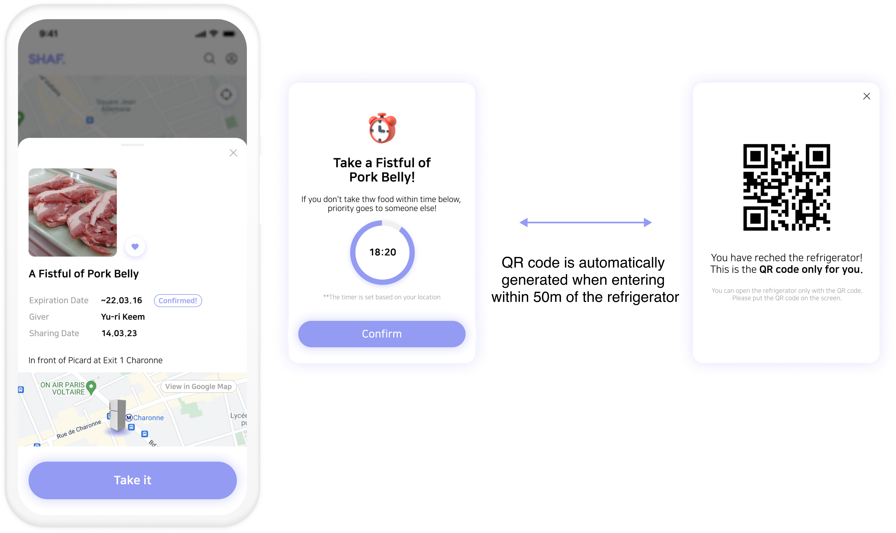
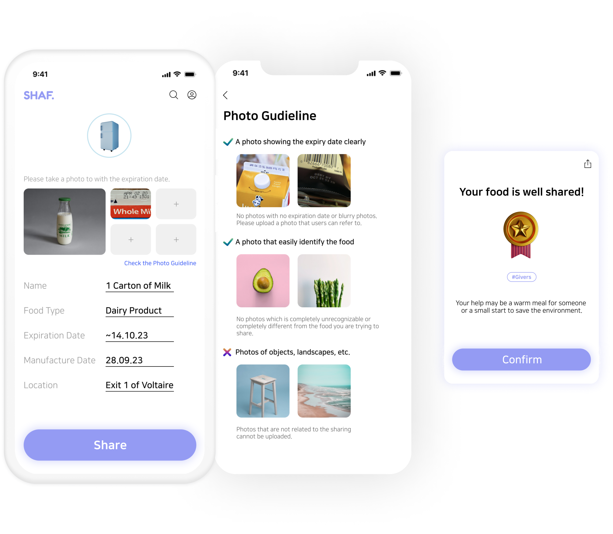
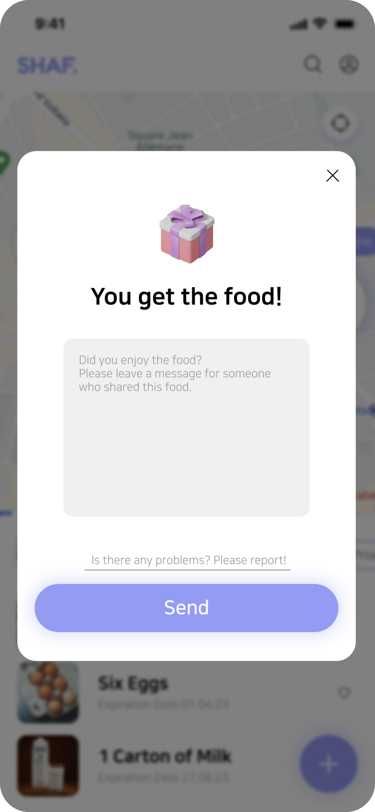
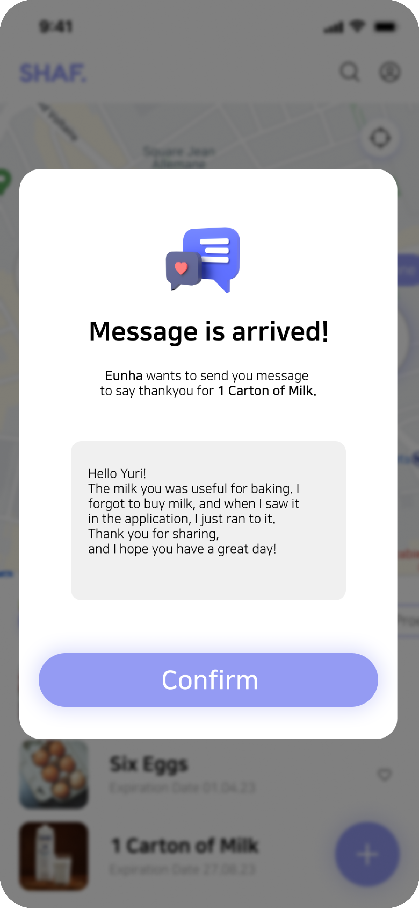
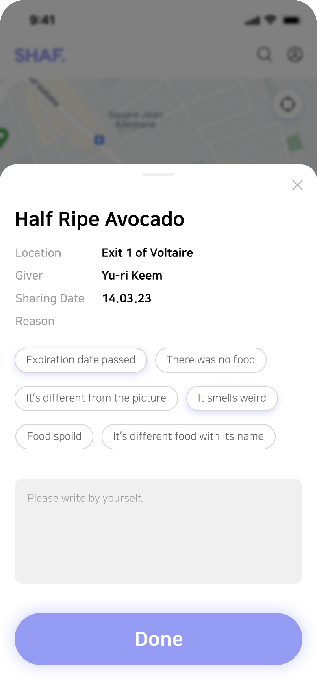
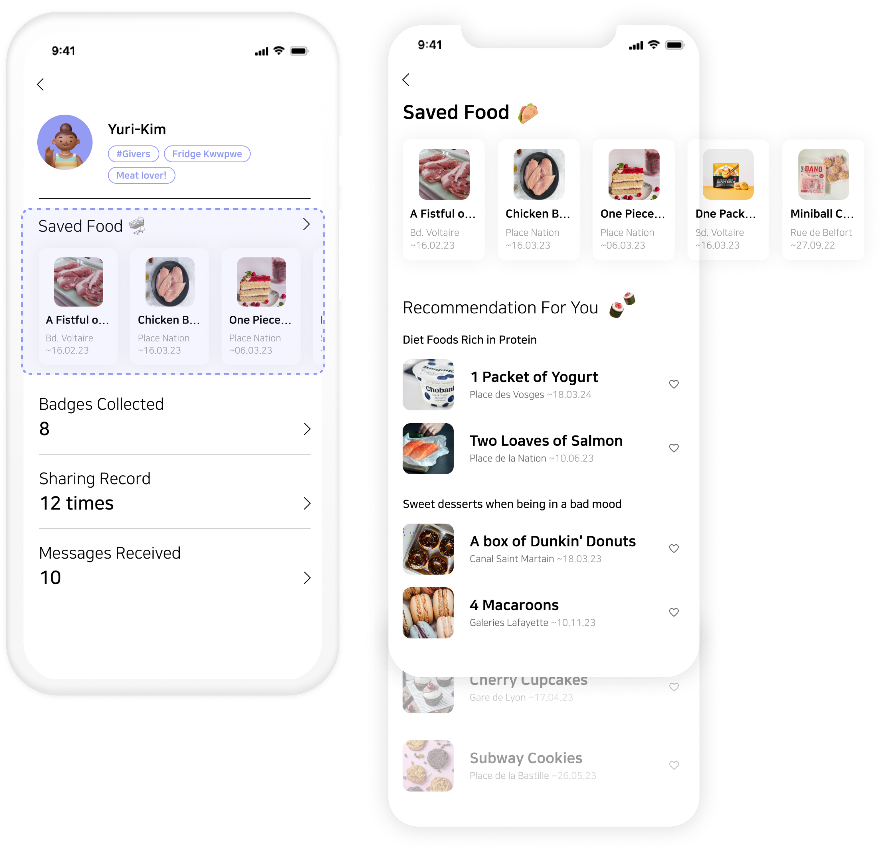

Output
A sharing economy system that can handle food waste in smart way for single-person households
1. Check the food around me in real time
◼ Take a look at the refrigerators
Users can search for food ingredients in nearby refrigerators in real time and get a share of the ingredients they want.
◼ Search for a specific food
Users can search for the ingredients of which they are in need and see where the ingredients are located on a map.

2. Sharing food in a way of ensuring freshness and safety
Step 2
Start the timer
: It keeps food fresh by activating a timer so that users can take food on time.
Step 3
Generate the QR code
: The reliability of the service is increased by granting authority with a QR code so that only authorized users can open the refrigerator.

3. Encourage sharing with a clear reward system
Step 2
Get a reward
: It helps feel a sense of belonging between the pople who practice generosity through the hashtag #Givers, and encourages sharing through a reward system called badges.

4. Send a thank you message after sharing
It allows users to share thanks messages so as not to forget the affection between people.
But if there is a problem with the food, users can report it right away!
When there is a problem with the shared food, users can report it immediately so that other users do not experience a same inconvenience



5. Checking my status for overall services
On the My Page, users can easily check service usage records, such as badges they have collected, sharing records, and thank you messages received. In addition, users can see the foods they saved at a glance, the application suggests foods that can be shared based on previously saved food.
